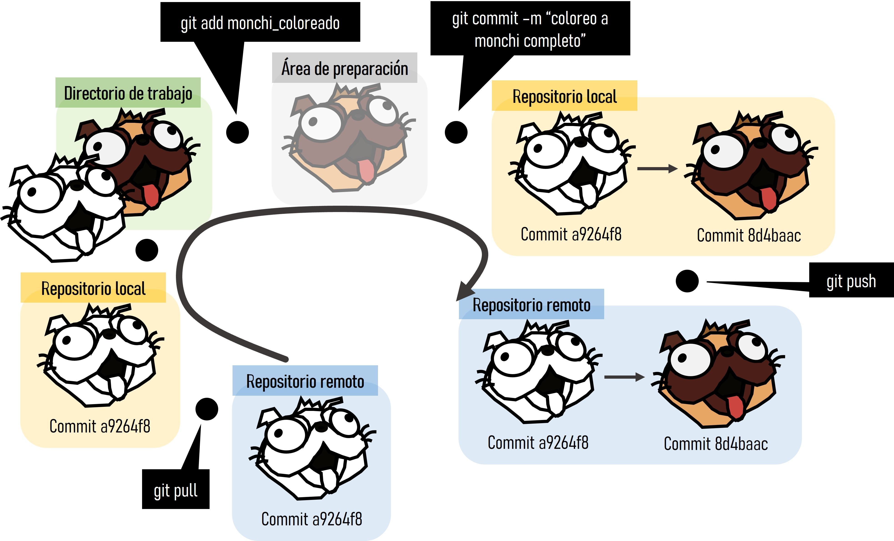
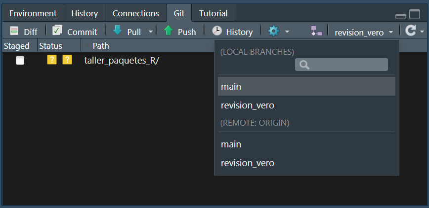
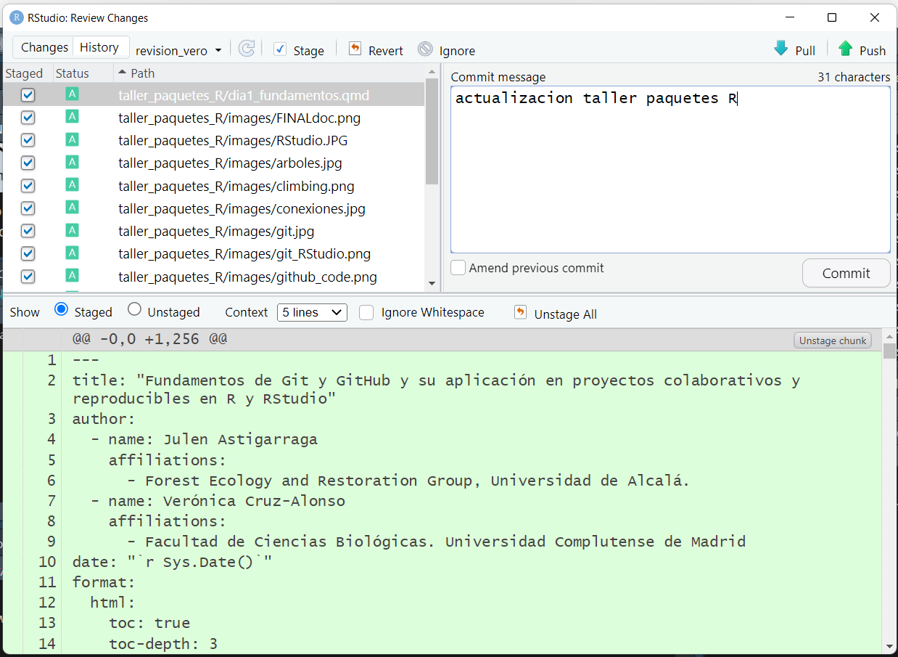
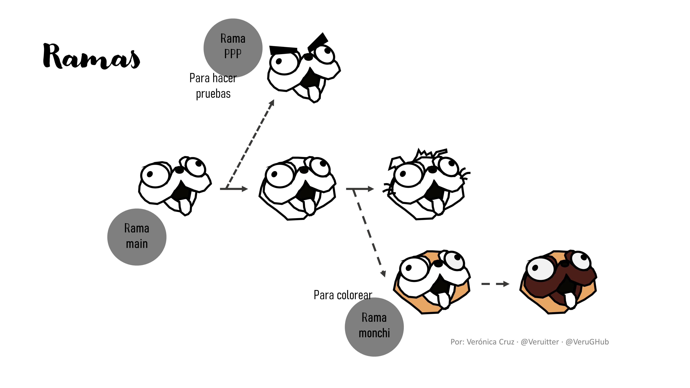
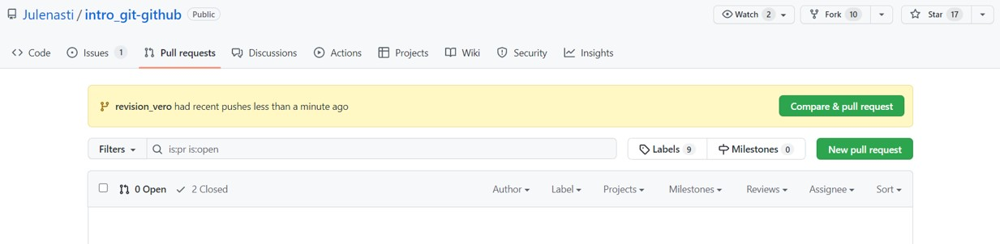

getwd() # saber directorio de trabajo
setwd("C:/Users/veruk/Desktop/Disco/Curso Ciencia de Datos/ciencia_datos") # ojo con la ruta / o \\Programación y análisis estadístico en R
Introducción al lenguaje de R y organización del trabajo en Git y GitHub
1 Quiénes somos
Verónica Cruz-Alonso (veronica.cral@gmail.com). Investigadora postdoctoral de la Universidad Complutense de Madrid y la Universidad de Alcalá en España.
Imparto cursos de ciencia de datos junto con Julen Astigarraga y Enrique Andivia. En DatSciR publicamos los materiales de los cursos que impartimos.
Soy co-coordinadora del grupo de trabajo de Ecoinformática de la Asociación Española de Ecología Terrestre.
Y vosotros ¿quiénes sois?
2 Presentación
En este curso exploraremos tanto los fundamentos teóricos como las aplicaciones prácticas de la ciencia de datos en R. Abordaremos desde tareas comunes con las que nos enfrentamos en nuestro día a día, como la limpieza y transformación de datos, hasta nociones más avanzadas de visualización y programación y análisis estadístico. Además, aprenderemos a utilizar herramientas para generar documentos reproducibles y colaborativos. El curso combina la teoría con la práctica y las lecciones se adaptarán a los problemas específicos de los estudiantes, que irán evolucionando día a día.
El objetivo principal es que tanto aquellos con conocimientos básicos en ciencia de datos y análisis estadístico como aquellos con un nivel más avanzado puedan beneficiarse y llevar consigo nuevos aprendizajes al finalizar el curso.

3 Estructura del curso
| Bloques | Contenido |
|---|---|
| Introducción al lenguaje de R y organización del trabajo en Git y GitHub | Introducción a la programación en R Introducción a Git Introducción a GitHub Flujo de trabajo en Git y GitHub Trabajos colaborativos |
| Organización de datos y bases de programación funcional | Tidyverse Importar, filtrar, seleccionar, transformar, unir y exportar datos Funciones Estilo de código Iteraciones Programación funcional |
| Visualización y análisis exploratorio de datos | Fundamentos de visualización Bases: gráficos por capas Visualización avanzada |
| Análisis de datos: modelos lineales habituales en ecología | |
| Comunicación de resultados en Quarto | Introducción a R Markdown Introducción a Quarto R Markdown vs Quarto Trabajos reproducibles |
4 Dinámica del curso
Cada d√≠a combinaremos teor√≠a con ejercicios. Idealmente, el cuarto y quinto d√≠a tendremos tiempo para que cada uno trabaje con sus propios datos. Todos los apuntes y ejercicios resueltos estarán disponibles en el repositorio de GitHub del curso. Si alguien tiene alguna duda o sugerencia, me puede contactar por correo electr√≥nico o publicarlo en las discusiones del repositorio de GitHub ¬°as√≠ aprenderemos entre todos! üòâ

5 Objetivos del día 1
Aprender conceptos básicos de la programación en R.
Comprender la estructura, funcionalidad y potencialidad de Git y GitHub
Comprender el flujo de trabajo entre Git, GitHub y RStudio
Aprender a trabajar colaborativamente con Git y GitHub
6 Conceptos básicos
R: lenguaje de programación dinámico (se interpreta el código en el momento que se ejecuta).
R es un lenguaje y un entorno para la computación estadística y gráfica
RStudio: entorno de desarrollo integrado para programar en R. Tiene cuatro zonas diferenciadas: el editor de código, la consola (donde se ejecuta el código), el navegador del espacio de trabajo (con el entorno –environment- y el historial de comandos) y el mix de abajo a la derecha (Archivos, Gráficos, Paquetes, Ayuda).
Objetos: cualquier elemento almacenado con un nombre específico. Pueden ser de muchas clases:
numeric,integer,logical,data.frame,SpatVector, etc.Funciones: objetos de R que toman un vector de entrada y dan como resultado otro vector haciendo una acción concreta (funcionalidad específica). Son los bloques de construcción fundamentales en cualquier script de R que es un lenguaje funcional.
Para comprender la computación en R, resultan útiles dos lemas:
- Todo lo que existe es un objeto.
- Todo lo que sucede es una llamada a función.
— John Chambers (Advanced R)
Paquetes o librerias: contienen funciones reutilizables, documentación sobre cómo usarlas y datos de ejemplo. Son las unidades fundamentales de código reproducible en R.
CRAN: the Comprehensive R Archive Network.
7 Comenzando a trabajar en R
7.1 El espacio de trabajo
El directorio de trabajo es la carpeta de nuestro ordenador donde estamos trabajando.
No es recomendable establecer el directorio de trabajo manualmente porque el trabajo deja de ser reproducible. Es mejor crear desde el principio un proyecto en R ligado a un directorio relativo que contenga todos los datos de entrada, los scripts y los resultados del script. Al abrir el proyecto, se sincroniza con pestaña Files.
üí°Para crear un proyecto: Archivo > Nuevo proyecto
7.1.1 Ejercicio
Crea un proyecto para el curso de de ciencia de datos
7.2 Instalar y cargar paquetes
üí°Para ejecutar un comando: Ctrl + Enter (Ctrl + R)
# install.packages("tidyverse", dep = T) # dep = T significa instalar dependencias
library(tidyverse)Warning: package 'ggplot2' was built under R version 4.3.3Warning: package 'tidyr' was built under R version 4.3.3Warning: package 'readr' was built under R version 4.3.2Warning: package 'purrr' was built under R version 4.3.2Warning: package 'dplyr' was built under R version 4.3.2Warning: package 'stringr' was built under R version 4.3.2Warning: package 'lubridate' was built under R version 4.3.2── Attaching core tidyverse packages ──────────────────────── tidyverse 2.0.0 ──
✔ dplyr 1.1.4 ✔ readr 2.1.5
✔ forcats 1.0.0 ✔ stringr 1.5.1
✔ ggplot2 3.5.1 ✔ tibble 3.2.1
✔ lubridate 1.9.3 ✔ tidyr 1.3.1
✔ purrr 1.0.2
── Conflicts ────────────────────────────────────────── tidyverse_conflicts() ──
✖ dplyr::filter() masks stats::filter()
✖ dplyr::lag() masks stats::lag()
ℹ Use the conflicted package (<http://conflicted.r-lib.org/>) to force all conflicts to become errors?tidyversestarting httpd help server ... done?select7.2.1 Ejercicio
Instala el metapaquete tidyverse utilizando la consola.
7.3 Operaciones aritméticas (R como calculadora)
5 + 6[1] 115 * 6[1] 3060 / 4[1] 155 + 4 - 2[1] 75 + 4 * 5[1] 25(5 + 4) * 5[1] 45log(10) # logaritmo neperiano [1] 2.302585log10(10) [1] 1exp(1) [1] 2.7182823 ^ 2 [1] 93 ^ 2 / 3 [1] 3sqrt(16) [1] 4pi [1] 3.141593sin(pi / 2) # en radianes [1] 1cos(pi / 2)[1] 6.123032e-17tan(pi / 2)[1] 1.633124e+16asin(1) * 2[1] 3.141593acos(1)[1] 08 Objetos de R
8.1 Nombramiento de objetos
Al asignar un nombre a un objeto podemos llamarlos siempre que necesitemos a lo largo del script. No es necesario guardar (exportar) la mayoría de los objetos que tenemos en el entorno de trabajo de R a nuestro ordenador, lo importante es conservar el script con el que se generan.
x <- 4.5 # shortcut para la flecha de asignación Alt + "-"
y <- "objeto" # si el objeto contiene letras, usar comillas
class(x) # funci√≥n para ver de que clase es nuestro objeto [1] "numeric"class(y) [1] "character"x # Llamar al vector para saber su valor [1] 4.5y[1] "objeto"üìùLos nombre de los objetos deben ser descriptivos y no pueden contener s√≠mbolos especiales (^, !, $, @, +, -, /, *).
üìùR es sensible a las mayúsculas. Mejor no usarlas.
8.2 Tipos de objetos
8.2.1 Vectores
Un vector es la estructura de datos más sencilla en R. Un vector es una colección de uno o más datos del mismo tipo.
v1 <- c(2.4, 4, 6, 3.2) # si quiero asignar mas de un valor uso "c" (concatenar)
v1 [1] 2.4 4.0 6.0 3.2v1 * 100 # puedo operar con los vectores [1] 240 400 600 320log(v1)[1] 0.8754687 1.3862944 1.7917595 1.1631508v2 <- c(1, 3, 4, 8) # pero también entre vectores
v1 + v2[1] 3.4 7.0 10.0 11.2v3 <- v1 - v2
v3[1] 1.4 1.0 2.0 -4.8mean(x = v2) # funciones ya programadas [1] 4# ?mean # ayuda de funciones
sd(v2) [1] 2.94392length(v2) # n vector [1] 4max(v2) [1] 8min(v2)[1] 1# funciones que facilitan la creación de vectores
rep(x = 1, times = 4) [1] 1 1 1 11:10 # dos puntos de a a b [1] 1 2 3 4 5 6 7 8 9 10seq(from = 1, to = 20, by = 2) [1] 1 3 5 7 9 11 13 15 17 19c(v1, v2) [1] 2.4 4.0 6.0 3.2 1.0 3.0 4.0 8.0c(v1, rep(0, 3), v1) [1] 2.4 4.0 6.0 3.2 0.0 0.0 0.0 2.4 4.0 6.0 3.28.2.2 Ejercicio
Elije un número y multiplicalo por 3
Crea un objeto que contenga 100 valores entre 1900 y 2000
Suma un número a tu objeto
Multiplica tu objeto por sí mismo
Crea un objeto que contenga el número 5 repetido 9 veces junto con una secuencia de 5 a 50 cada 5 elementos
¿Cuál es la longitud del objeto anterior?
Para crear vectores se pueden usar otras estrategias como las que tenéis recogidas a continuación.
rep(x = 1, times = 4) [1] 1 1 1 1rep(1:4, times = 2) [1] 1 2 3 4 1 2 3 4rep(1:4, each = 2) [1] 1 1 2 2 3 3 4 4rep(1:4, times = 1:4) [1] 1 2 2 3 3 3 4 4 4 4rep(x = c("gato", "perro", "pez"), times = c(5, 3, 1))[1] "gato" "gato" "gato" "gato" "gato" "perro" "perro" "perro" "pez" rnorm(10, mean = 4, sd = 2.2) [1] 0.6871997 1.7439066 8.8961007 4.2931871 4.1131187 4.8729851 3.6640200
[8] 2.6266738 5.7575228 0.84861388.2.3 Matrices
Las matrices pueden ser descritas como vectores multidimensionales. Al igual que un vector, únicamente pueden contener datos de un sólo tipo, pero además de largo, tienen más dimensiones.
mivector <- sample(x = 1:10, size = 1000, replace = T) # sample: función para crear numeros aleatorios
mimatriz <- matrix(mivector, nrow = 100, ncol = 10) # matrix: función para convertir vector en matriz. matrix va a rellenar por columnas por defecto
str(mivector) # mostrar estructura datos int [1:1000] 1 8 6 9 9 9 2 1 2 8 ...str(mimatriz) int [1:100, 1:10] 1 8 6 9 9 9 2 1 2 8 ...summary(mivector) # resumen de los datos Min. 1st Qu. Median Mean 3rd Qu. Max.
1.000 3.000 6.000 5.465 8.000 10.000 summary(mimatriz) V1 V2 V3 V4 V5
Min. : 1.00 Min. : 1.0 Min. : 1.00 Min. : 1.00 Min. : 1.00
1st Qu.: 2.00 1st Qu.: 3.0 1st Qu.: 3.00 1st Qu.: 3.75 1st Qu.: 3.00
Median : 6.00 Median : 5.0 Median : 6.00 Median : 6.00 Median : 5.50
Mean : 5.44 Mean : 5.5 Mean : 5.58 Mean : 5.63 Mean : 5.34
3rd Qu.: 8.25 3rd Qu.: 8.0 3rd Qu.: 8.00 3rd Qu.: 8.00 3rd Qu.: 8.00
Max. :10.00 Max. :10.0 Max. :10.00 Max. :10.00 Max. :10.00
V6 V7 V8 V9
Min. : 1.00 Min. : 1.00 Min. : 1.00 Min. : 1.00
1st Qu.: 2.00 1st Qu.: 3.00 1st Qu.: 2.75 1st Qu.: 3.00
Median : 5.00 Median : 6.00 Median : 5.00 Median : 5.00
Mean : 5.23 Mean : 5.51 Mean : 5.33 Mean : 5.57
3rd Qu.: 8.00 3rd Qu.: 8.00 3rd Qu.: 8.00 3rd Qu.: 8.00
Max. :10.00 Max. :10.00 Max. :10.00 Max. :10.00
V10
Min. : 1.00
1st Qu.: 3.00
Median : 5.50
Mean : 5.52
3rd Qu.: 9.00
Max. :10.00 a <- c(1, 2, 3, 4)
b <- c(1, 2, 3, 4)
d <- c("hi", "hola", "hola", "hi")
mimatriz_num <- matrix(c(a, b), nrow = 4, ncol = 2)
mimatriz_num [,1] [,2]
[1,] 1 1
[2,] 2 2
[3,] 3 3
[4,] 4 4mimatriz_car <- matrix(c(a, b, d), nrow = 4, ncol = 3)
mimatriz_car [,1] [,2] [,3]
[1,] "1" "1" "hi"
[2,] "2" "2" "hola"
[3,] "3" "3" "hola"
[4,] "4" "4" "hi" summary(mimatriz_num) V1 V2
Min. :1.00 Min. :1.00
1st Qu.:1.75 1st Qu.:1.75
Median :2.50 Median :2.50
Mean :2.50 Mean :2.50
3rd Qu.:3.25 3rd Qu.:3.25
Max. :4.00 Max. :4.00 summary(mimatriz_car) V1 V2 V3
Length:4 Length:4 Length:4
Class :character Class :character Class :character
Mode :character Mode :character Mode :character 8.2.4 Bases de datos (data.frame)
Los data.frames son estructuras de datos de dos dimensiones (rectangulares) que pueden contener datos de diferentes tipos, por lo tanto, son heterogéneas. Esta estructura de datos es la más usada para realizar análisis de datos.
midataframe <- data.frame(
mivariable1 = a,
mivariable2 = b,
mivariable3 = d)
View(midataframe)
# un tibble es un data.frame de tidyverse, con características mejoradas
mitibble <- tibble(
mivariable1 = a,
mivariable2 = b,
mivariable3 = d)
str(mitibble) tibble [4 × 3] (S3: tbl_df/tbl/data.frame)
$ mivariable1: num [1:4] 1 2 3 4
$ mivariable2: num [1:4] 1 2 3 4
$ mivariable3: chr [1:4] "hi" "hola" "hola" "hi"str(midataframe) 'data.frame': 4 obs. of 3 variables:
$ mivariable1: num 1 2 3 4
$ mivariable2: num 1 2 3 4
$ mivariable3: chr "hi" "hola" "hola" "hi"summary(mitibble) mivariable1 mivariable2 mivariable3
Min. :1.00 Min. :1.00 Length:4
1st Qu.:1.75 1st Qu.:1.75 Class :character
Median :2.50 Median :2.50 Mode :character
Mean :2.50 Mean :2.50
3rd Qu.:3.25 3rd Qu.:3.25
Max. :4.00 Max. :4.00 summary(midataframe) mivariable1 mivariable2 mivariable3
Min. :1.00 Min. :1.00 Length:4
1st Qu.:1.75 1st Qu.:1.75 Class :character
Median :2.50 Median :2.50 Mode :character
Mean :2.50 Mean :2.50
3rd Qu.:3.25 3rd Qu.:3.25
Max. :4.00 Max. :4.00 mitibble# A tibble: 4 × 3
mivariable1 mivariable2 mivariable3
<dbl> <dbl> <chr>
1 1 1 hi
2 2 2 hola
3 3 3 hola
4 4 4 hi midataframe mivariable1 mivariable2 mivariable3
1 1 1 hi
2 2 2 hola
3 3 3 hola
4 4 4 hi8.2.5 Listas
Las listas, al igual que los vectores, son estructuras de datos unidimensionales, sólo tienen largo, pero a diferencia de los vectores cada uno de sus elementos puede ser de diferente tipo o incluso de diferente clase, por lo que son estructuras heterogéneas.
e <- c(TRUE, TRUE, TRUE, FALSE, FALSE)
milista <- list(a, b, d, e)
milista [[1]]
[1] 1 2 3 4
[[2]]
[1] 1 2 3 4
[[3]]
[1] "hi" "hola" "hola" "hi"
[[4]]
[1] TRUE TRUE TRUE FALSE FALSEstr(milista) List of 4
$ : num [1:4] 1 2 3 4
$ : num [1:4] 1 2 3 4
$ : chr [1:4] "hi" "hola" "hola" "hi"
$ : logi [1:5] TRUE TRUE TRUE FALSE FALSEsummary(milista) Length Class Mode
[1,] 4 -none- numeric
[2,] 4 -none- numeric
[3,] 4 -none- character
[4,] 5 -none- logical milista2 <- list(a, b, d, e, mivector, mimatriz, midataframe)
str(milista2)List of 7
$ : num [1:4] 1 2 3 4
$ : num [1:4] 1 2 3 4
$ : chr [1:4] "hi" "hola" "hola" "hi"
$ : logi [1:5] TRUE TRUE TRUE FALSE FALSE
$ : int [1:1000] 1 8 6 9 9 9 2 1 2 8 ...
$ : int [1:100, 1:10] 1 8 6 9 9 9 2 1 2 8 ...
$ :'data.frame': 4 obs. of 3 variables:
..$ mivariable1: num [1:4] 1 2 3 4
..$ mivariable2: num [1:4] 1 2 3 4
..$ mivariable3: chr [1:4] "hi" "hola" "hola" "hi"8.3 Indexación
mivector [1] 1 8 6 9 9 9 2 1 2 8 1 10 2 5 9 3 7 9 4 1 7 2 1 1
[25] 2 4 1 5 10 6 2 1 2 10 10 3 6 6 9 7 3 7 9 2 4 7 8 3
[49] 9 4 7 7 7 10 2 6 9 5 1 5 10 2 3 7 8 6 9 4 10 5 1 9
[73] 5 7 7 10 9 1 7 5 9 1 3 1 4 10 1 6 10 4 4 6 3 2 7 6
[97] 1 9 9 7 5 6 1 10 6 5 5 4 10 6 3 6 7 5 1 9 5 7 10 5
[121] 6 9 9 4 3 8 6 8 5 3 4 7 7 5 10 5 7 8 9 9 6 7 3 8
[145] 4 1 3 10 9 8 6 1 2 9 2 5 3 4 5 9 8 2 9 5 1 10 5 3
[169] 2 8 1 3 3 7 7 2 8 6 1 2 10 8 3 1 1 6 5 9 9 8 5 7
[193] 1 4 1 3 4 1 10 8 9 8 10 9 1 8 1 9 4 3 2 1 7 6 9 1
[217] 9 6 3 6 1 4 5 9 3 7 5 4 2 9 10 6 1 9 9 8 8 3 8 9
[241] 5 10 3 5 8 2 1 1 7 9 2 6 4 7 3 10 3 4 10 8 1 2 6 10
[265] 9 7 1 7 7 7 5 1 5 6 1 5 3 2 1 8 5 7 6 10 10 3 7 8
[289] 4 7 6 7 3 2 8 9 7 9 2 4 9 2 6 2 7 4 4 10 8 10 10 4
[313] 8 8 4 5 3 4 10 10 9 4 6 7 10 1 5 1 3 7 2 4 5 3 4 8
[337] 1 10 9 3 5 5 3 2 3 2 1 6 2 3 9 4 5 10 3 4 10 5 4 1
[361] 6 6 6 10 7 1 8 5 9 4 9 9 10 6 6 10 9 7 10 7 6 4 10 6
[385] 2 7 6 4 4 8 7 7 1 3 2 4 1 6 7 6 7 3 10 2 8 5 9 3
[409] 6 2 3 9 1 6 1 3 2 6 8 8 9 7 8 7 3 3 5 4 8 2 1 1
[433] 7 1 10 8 3 10 6 6 1 7 1 6 3 8 2 9 9 3 5 4 9 7 8 4
[457] 7 4 9 9 7 1 4 2 2 4 6 5 5 2 1 9 3 10 6 8 8 2 8 9
[481] 7 10 7 1 5 6 4 2 1 4 2 3 9 5 9 1 9 10 1 10 7 6 9 5
[505] 1 7 9 2 1 1 3 6 3 4 2 7 10 5 10 4 4 6 8 2 3 6 1 5
[529] 6 8 6 3 5 3 8 9 1 9 6 2 7 10 1 2 1 2 1 6 1 4 3 8
[553] 7 2 9 5 8 8 5 5 3 10 5 5 4 6 3 10 2 2 7 10 1 6 7 7
[577] 2 4 7 4 2 2 10 4 8 10 4 7 1 8 8 6 7 9 9 2 10 1 10 2
[601] 1 1 9 7 5 5 6 1 4 7 4 10 1 10 1 9 9 9 6 4 5 10 8 6
[625] 7 1 8 9 5 6 8 9 7 3 2 7 3 6 2 10 8 1 3 1 2 7 7 7
[649] 5 10 6 7 6 1 4 3 1 3 6 7 4 7 10 6 3 2 3 8 9 5 4 5
[673] 8 10 4 7 4 3 6 6 2 3 7 8 8 7 1 10 9 10 2 6 4 1 1 8
[697] 8 4 9 3 10 2 3 6 7 5 5 7 4 6 6 5 5 7 4 1 5 1 4 1
[721] 10 5 10 1 8 9 8 9 7 4 4 1 9 9 4 2 7 5 5 7 4 6 3 7
[745] 2 4 8 2 8 9 9 4 7 1 10 7 2 8 5 7 1 1 5 6 6 9 9 9
[769] 1 1 3 3 3 2 2 2 2 10 10 8 10 5 6 9 1 2 4 7 9 9 2 1
[793] 8 5 2 7 1 3 9 9 3 6 6 8 5 10 8 2 3 10 7 2 6 8 5 6
[817] 4 4 4 4 6 9 9 9 5 9 10 1 2 4 10 1 10 9 5 4 6 8 7 7
[841] 1 1 10 1 2 3 2 8 4 7 9 9 1 5 7 1 9 7 4 2 7 10 10 8
[865] 4 5 5 8 7 3 3 9 5 7 2 6 5 4 7 8 9 10 3 2 8 8 3 6
[889] 3 3 5 4 7 1 9 1 5 5 2 5 7 6 3 10 5 3 7 10 2 8 7 8
[913] 10 1 6 5 5 10 4 5 9 3 4 10 10 9 9 9 3 9 3 1 7 10 5 2
[937] 9 3 10 7 10 1 1 2 2 8 9 4 1 3 9 5 6 2 9 8 2 1 6 10
[961] 3 1 9 1 5 1 6 3 9 9 2 9 2 3 1 1 7 9 7 3 9 10 8 6
[985] 1 8 8 5 1 5 3 7 6 5 2 5 7 1 2 9mivector[505][1] 1mimatriz [,1] [,2] [,3] [,4] [,5] [,6] [,7] [,8] [,9] [,10]
[1,] 1 5 9 9 7 7 1 10 3 7
[2,] 8 6 8 2 3 6 1 2 6 6
[3,] 6 1 10 6 10 9 9 3 6 3
[4,] 9 10 9 2 2 5 7 6 8 10
[5,] 9 6 1 7 8 1 5 7 5 5
[6,] 9 5 8 4 5 7 5 5 10 3
[7,] 2 5 1 4 9 9 6 5 8 7
[8,] 1 4 9 10 3 2 1 7 2 10
[9,] 2 10 4 8 6 1 4 4 3 2
[10,] 8 6 3 10 2 1 7 6 10 8
[11,] 1 3 2 10 3 3 4 6 7 7
[12,] 10 6 1 4 9 6 10 5 2 8
[13,] 2 7 7 8 1 3 1 5 6 10
[14,] 5 5 6 8 6 4 10 7 8 1
[15,] 9 1 9 4 1 2 1 4 5 6
[16,] 3 9 1 5 3 7 9 1 6 5
[17,] 7 5 9 3 2 10 9 5 4 5
[18,] 9 7 6 4 6 5 9 1 4 10
[19,] 4 10 3 10 8 10 6 4 4 4
[20,] 1 5 6 10 8 4 4 1 4 5
[21,] 7 6 1 9 9 4 5 10 6 9
[22,] 2 9 4 4 7 6 10 5 9 3
[23,] 1 9 5 6 8 8 8 10 9 4
[24,] 1 4 9 7 7 2 6 1 9 10
[25,] 2 3 3 10 3 3 7 8 5 10
[26,] 4 8 7 1 3 6 1 9 9 9
[27,] 1 6 5 5 5 1 8 8 10 9
[28,] 5 8 4 1 4 5 9 9 1 9
[29,] 10 5 2 3 8 6 5 7 2 3
[30,] 6 3 9 7 2 8 6 4 4 9
[31,] 2 4 10 2 1 6 8 4 10 3
[32,] 1 7 6 4 1 3 9 1 1 1
[33,] 2 7 1 5 7 5 7 9 10 7
[34,] 10 5 9 3 1 3 3 9 9 10
[35,] 10 10 9 4 10 8 2 4 5 5
[36,] 3 5 8 8 8 9 7 2 4 2
[37,] 6 7 8 1 3 1 3 7 6 9
[38,] 6 8 3 10 10 9 6 5 8 3
[39,] 9 9 8 9 6 6 2 5 7 10
[40,] 7 9 9 3 6 2 10 7 7 7
[41,] 3 6 5 5 1 7 8 4 1 10
[42,] 7 7 10 5 7 10 1 6 1 1
[43,] 9 3 3 3 1 1 3 3 10 1
[44,] 2 8 5 2 6 2 1 7 1 2
[45,] 4 4 8 3 3 1 2 2 2 2
[46,] 7 1 2 2 8 2 7 4 3 8
[47,] 8 3 1 1 2 1 7 8 2 9
[48,] 3 10 1 6 9 6 7 2 8 4
[49,] 9 9 7 2 9 1 5 8 4 1
[50,] 4 8 9 3 3 4 10 9 7 3
[51,] 7 6 2 9 5 3 6 9 9 9
[52,] 7 1 6 4 4 8 7 4 9 5
[53,] 7 2 4 5 9 7 6 7 1 6
[54,] 10 9 7 10 7 2 1 1 5 2
[55,] 2 2 3 3 8 9 4 10 7 9
[56,] 6 5 10 4 4 5 3 7 1 8
[57,] 9 3 3 10 7 8 1 2 9 2
[58,] 5 4 4 5 4 8 3 8 7 1
[59,] 1 5 10 4 9 5 6 5 4 6
[60,] 5 9 8 1 9 5 7 7 2 10
[61,] 10 8 1 6 7 3 4 1 7 3
[62,] 2 2 2 6 1 10 7 1 10 1
[63,] 3 9 6 6 4 5 10 5 10 9
[64,] 7 5 10 10 2 5 6 6 8 1
[65,] 8 1 9 7 2 4 3 6 4 5
[66,] 6 10 7 1 4 6 2 9 5 1
[67,] 9 5 1 8 6 3 3 9 5 6
[68,] 4 3 7 5 5 10 8 9 8 3
[69,] 10 2 7 9 5 2 9 1 7 9
[70,] 5 8 7 4 2 2 5 1 3 9
[71,] 1 1 5 9 1 7 4 3 3 2
[72,] 9 3 1 9 9 10 5 3 9 9
[73,] 5 3 5 10 3 1 8 3 5 2
[74,] 7 7 6 6 10 6 10 2 7 3
[75,] 7 7 1 6 6 7 4 2 2 1
[76,] 10 2 5 10 8 7 7 2 6 1
[77,] 9 8 3 9 8 2 4 2 5 7
[78,] 1 6 2 7 2 4 3 10 4 9
[79,] 7 1 1 10 8 7 6 10 7 7
[80,] 5 2 8 7 9 4 6 8 8 3
[81,] 9 10 5 6 7 2 2 10 9 9
[82,] 1 8 7 4 10 2 3 5 10 10
[83,] 3 3 6 10 7 10 7 6 3 8
[84,] 1 1 10 6 1 4 8 9 2 6
[85,] 4 1 10 2 5 8 8 1 8 1
[86,] 10 6 3 7 6 10 7 2 8 8
[87,] 1 5 7 6 4 4 1 4 3 8
[88,] 6 9 8 4 2 7 10 7 6 5
[89,] 10 9 4 4 1 1 9 9 3 1
[90,] 4 8 7 8 4 8 10 9 3 5
[91,] 4 5 6 7 2 8 2 2 5 3
[92,] 6 7 7 7 3 6 6 1 4 7
[93,] 3 1 3 1 9 7 4 8 7 6
[94,] 2 4 2 3 5 9 1 5 1 5
[95,] 7 1 8 2 9 9 1 2 9 2
[96,] 6 3 9 4 1 2 8 7 1 5
[97,] 1 4 7 1 9 10 8 1 5 7
[98,] 9 1 9 6 10 1 4 3 5 1
[99,] 9 10 2 7 1 10 9 9 2 2
[100,] 7 8 4 6 10 2 3 9 5 9mimatriz[20, 9] # [filas, columnas] [1] 4mimatriz[20, ] # selecciono todas las columnas de la fila 20 [1] 1 5 6 10 8 4 4 1 4 5mimatriz[, 9] # selecciono todas las filas de la columna 9 [1] 3 6 6 8 5 10 8 2 3 10 7 2 6 8 5 6 4 4 4 4 6 9 9 9 5
[26] 9 10 1 2 4 10 1 10 9 5 4 6 8 7 7 1 1 10 1 2 3 2 8 4 7
[51] 9 9 1 5 7 1 9 7 4 2 7 10 10 8 4 5 5 8 7 3 3 9 5 7 2
[76] 6 5 4 7 8 9 10 3 2 8 8 3 6 3 3 5 4 7 1 9 1 5 5 2 5midataframe mivariable1 mivariable2 mivariable3
1 1 1 hi
2 2 2 hola
3 3 3 hola
4 4 4 himidataframe[3, 3] [1] "hola"midataframe[3, "mivariable3"] [1] "hola"midataframe[, "mivariable3"] [1] "hi" "hola" "hola" "hi" midataframe$mivariable3[1] "hi" "hola" "hola" "hi" milista [[1]]
[1] 1 2 3 4
[[2]]
[1] 1 2 3 4
[[3]]
[1] "hi" "hola" "hola" "hi"
[[4]]
[1] TRUE TRUE TRUE FALSE FALSEmilista[[4]] [1] TRUE TRUE TRUE FALSE FALSEmilista[[4]][4][1] FALSEüí°Puedes leer más sobre los tipos de objetos en R aqu√≠.
üìù Usar espacios antes y despu√©s de = y despu√©s de , hace mucho más fácil identificar los argumentos de la funci√≥n y, en general, todos los componentes.
set.seed(123)
mean(rnorm(10, mean = 50, sd = 25) / 12, trim = 0.2)[1] 3.966805set.seed(123)
mean(rnorm(10,mean=50,sd=25)/12,trim=0.2)[1] 3.9668058.3.1 Ejercicio
Crea una lista que contenga dos data.frame con dos variables cada uno (variable1 y variable2) y diez observaciones por variable.
Accede a la octava observación de variable2 de cada data.frame.
9 Tidyverse
Tidyverse es una colección de paquetes (meta-paquete) de R. El núcleo contiene ocho paquetes principales (readr, tibble, dplyr, tidyr, stringr, forcats, ggplot2 y purrr), que comparten el diseño, la gramática y la estructura de los datos que necesitan. En el centro de la filosofía de tidyverse se encuentra la noción de “datos ordenados” (tidy data). Hadley Wickham (principal desarrollador de tidyverse) los define como “fáciles de manipular, modelar y visualizar, y que tienen una estructura específica: cada variable es una columna, cada observación es una fila y cada valor es una celda”. Tidyverse puede considerarse un dialecto del lenguaje de programación R que discretiza funciones amplias de R base (p. ej. merge) en diversas funciones específicas (p. ej. left_join, right_join).
Los tres principios básicos de este meta-paquete son:
Centrado en humanos: tiene un diseño intuitivo que facilita su uso y accesibilidad para el usuario, ya que está diseñado específicamente para respaldar las actividades de un analista de datos humano.
Consistencia: todos los paquetes están diseñados para trabajar con datos ordenados (tidy data), y las funciones de los paquetes tienen una nomenclatura común y congruente. Esto permite que un usuario que aprende sobre una función o paquete pueda aplicar ese conocimiento a otros, facilitando así la tarea de recordar y deducir código.
Componiblidad: permite al usuario resolver problemas complejos dividiéndolos en pequeñas partes, que pueden combinarse utilizando el operador pipe, ya sea el del paquete
magrittr(%>%) o el creado recientemente en R base (|>).
üí°Los dos operador pipe tienen peque√±as diferencias pero en general el comportamiento es el mismo.
üí°Para más informaci√≥n sobre tidyverse y las diferencias con R base te recomendamos leer Tidyverse: colecci√≥n de paquetes de R para la ciencia de datos.
length(unique(d))[1] 2d |> unique() |> length() # Ctrl + Shift + M para poner un pipe[1] 2En este curso realizaremos las distintas tareas que forman parte de la ciencia de datos utilizando tidyverse, aunque también se podrían llevar a cabo con R base. Consideramos que los cuatro pilares básicos de tidyverse (centrado en humanos, consistencia y componibilidad) facilitan tanto el aprendizaje como el trabajo diario, permitiendo realizar las mismas acciones de manera más sencilla, aunque reconocemos que esto puede variar según la persona.
10 ¿Quién responde a mis dudas en R?
Posit Recipes y en general Posit Resources
Ayuda > Cheat Sheets
Stack Overflow: plataforma de preguntas y respuestas para programadores profesionales y aficionados
ChatGPT y similares
Slack del Grupo de Ecoinformática de la AEET
Para dudas relacionadas con errores de paquetes: repositorio de GitHub del paquete en cuestión (p. ej. https://github.com/tidyverse/dplyr/issues)
Pedir ayuda utilizando ejemplos reproducibles con {reprex}.

11 Importancia de Git y GitHub
Git (https://git-scm.com/) y GitHub (https://github.com/) están ganando cada vez más importancia en diversos campos de estudio a medida que el volumen de datos aumenta y los análisis se hacen más complejos. Aprenderemos cómo Git puede usarse para controlar la trazabilidad de los cambios realizados en proyectos o archivos y veremos cómo este control de versiones es especialmente útil en proyectos colaborativos mediante el uso de un servidor de alojamiento en línea como GitHub.
Aunque existen multitud de manuales disponibles gratuitamente sobre cómo utilizar Git y GitHub, estas herramientas son complejas. El propósito original de Git era ayudar a grupos de desarrolladores informáticos a trabajar en colaboración en grandes proyectos de software, por lo que puede resultar enrevesado, hay múltiples soluciones para el mismo problema y tiene una curva de aprendizaje pronunciada. Sin embargo, Git y GitHub nos pueden ayudar a solucionar algunos problemas comunes derivados de la creación de diferentes versiones que pueden ser un poco molestos:
- Sobreescritura de un archivo
- Versiones finales infinitas

- Trabajo por error en una versión que no era la final
- Creación de copias “en conflicto” cuando dos personas trabajan a la vez
- Ediciones sin control de cambios

11.1 Qué es Git
Git es un sistema avanzado de control de versiones (como el “control de cambios” de Microsoft Word) distribuido [@blischak2016; @ram2013]. Git permite “rastrear” el progreso de un proyecto a lo largo del tiempo ya que hace “capturas” del mismo a medida que evoluciona y los cambios se van registrando. Este sistema permite ver qué cambios se hicieron, quién los hizo y por qué, e incluso volver a versiones anteriores. Además, Git facilita el trabajo en paralelo de varios participantes. Mientras que en otros sistemas de control de versiones (p. ej. Subversion (SVN, https://subversion.apache.org/) o Concurrent Versions System (CVS, http://cvs.nongnu.org/)) hay un servidor central y cualquier cambio hecho por un usuario se sincroniza con este servidor y de ahí con el resto de usuarios, Git es un control de versiones distribuido que permite a todos los usuarios trabajar en el proyecto paralelamente e ir haciendo “capturas” del trabajo de cada uno para luego unirlos. Otras alternativas de control de versiones distribuido comparables a Git son Mercurial (https://www.mercurial-scm.org/) o Bazaar (https://bazaar.canonical.com/), pero Git es con diferencia el más utilizado.

11.2 Qué es GitHub
GitHub es un servidor de alojamiento en línea o repositorio remoto para albergar proyectos basados en Git que permite la colaboración entre diferentes usuarios o con uno mismo [@galeano2018; @perez-riverol2016]. Un repositorio es un directorio donde desarrollar un proyecto que contiene todos los archivos necesarios para el mismo. Aunque existen distintos repositorios remotos (p. ej. GitLab, https://gitlab.com/, o Bitbucket, https://bitbucket.org/) con funcionalidad similar, GitHub es hoy en día el más utilizado. GitHub registra el desarrollo de los proyectos de manera remota, permite compartir proyectos entre distintos usuarios y proporciona la seguridad de la nube entre otras funciones. Cuando se trabaja en proyectos colaborativos, la base de la interacción entre Git y GitHub es que todos los colaboradores de un proyecto están de acuerdo en que GitHub contiene la copia principal del proyecto, es decir, GitHub contiene la copia centralizada del control de versiones distribuido o descentralizado.


12 Instalación
En este punto es necesario que tengas instalada la versión más reciente de R (https://cloud.r-project.org/), RStudio (https://posit.co/download/rstudio-desktop/), Git (https://happygitwithr.com/install-git.html) y una cuenta en GitHub (https://github.com/) creada.
12.1 Ejercicio
En el shell, preséntate a Git (Chapter 7: Git-Intro)
Tools -> Terminal
git config --global user.name 'Nombre Apellido'git config --global user.email 'nombre@ejemplo.com'üí°Este debe ser el correo electr√≥nico asociado a tu cuenta de GitHub
#|eval: false # También puedes hacerlo utilizando el paquete usethis # install.packages("usethis") # library(usethis) # use_git_config(user.name = "Monchi", user.email = "monchi@example.org")

Compueba que has instalado Git correctamente:
git --versionPara ver el usuario utilizado para configurar Git:
git config user.namePara ver a qué cuenta de correo está asociado Git:
git config user.emailPara ver tanto el usuario como el correo asociado:
git config --global --list
Para la resolución de problemas durante la instalación recomendamos mirar aquí: https://happygitwithr.com/troubleshooting.html
Genera un PAT (Personal Access Token) para HTTPS
Git puede comunicarse con un servidor remoto utilizando uno de los dos protocolos: HTTPS o SSH. Nosotros utilizaremos HTTPS con personal access token (PAT, https://happygitwithr.com/https-pat.html).
üí°Conviene describir el prop√≥sito del token en el campo Note, porque se pueden tener varios PATs. No podrás volver a ver este token, as√≠ que no cierres ni salgas de la ventana del navegador hasta que almacenes el PAT localmente. ¬°Trata este PAT como una contrase√±a!
13 Repositorios y proyectos
Un repositorio es como un “contenedor” donde desarrollar un proyecto.
Para crear un repositorio en GitHub damos a “+ New repository”. Aquí se indica el nombre, una pequeña descripción, y si quieres que sea público o privado. Se recomienda iniciar el repositorio con un archivo “README” (Initialize this repository with a README) para recoger cualquier información esencial para el uso del repositorio (estructura, descripción más detallada del contenido, etc.).
En RStudio, creamos un nuevo proyecto y lo conectamos al repositorio: File > New project > Version control > Git > copiar el URL del repositorio que hemos creado de GitHub (está en la página principal de nuestro repositorio, en “clone or download”). Seleccionamos el directorio local donde queremos guardar el proyecto y pulsamos en “Create project”.
Si vamos al directorio local seleccionado, encontraremos la carpeta conectada a Git y GitHub que hemos creado en nuestro ordenador. Podemos copiar aquí todos los archivos que nos interesan para el proyecto (datos, imágenes, etc).
üí°Para más informaci√≥n sobre c√≥mo clonar el repositorio en GitHub (repositorio remoto) en nuestro ordenador (repositorio local) ver https://happygitwithr.com/rstudio-git-github.html para hacerlo desde RStudio y @galeano2018 para hacerlo mediante la l√≠nea de comandos.
üí°En caso de querer conectar un antiguo proyecto de RStudio a Git y GitHub, puedes seguir los pasos que se describen aqu√≠: https://happygitwithr.com/existing-github-first.html.
13.1 Estructura del repositorio de GitHub
En la página principal del repositorio en GitHub podemos encontrar las siguientes pestañas:
Code: contenido del proyecto
Issues: foro del proyecto para comentar fallos, tareas pendientes, hacer peticiones a los desarrolladores, preguntar dudas, etc. Se pueden asignar tareas o preguntas a los miembros del proyecto escribiendo “@” antes del nombre del colaborador. Una vez resuelto, el issue se cierra (Close issue).
Pull requests: veremos más adelante para qué sirve.
Actions: son pequeñas aplicaciones que realizan alguna acción cada vez que se sube un commit (p. ej. tests).
Projects: es como una hoja de cálculo con tareas, encargados, deadlines, status, etc. que se integra con las incidencias y solicitudes de incorporación de cambios para ayudar a planificar las tareas y realizar el seguimiento del trabajo.
Wiki: es un espacio para documentar el proyecto (hoja de ruta, estado, documentación detallada…).
Security: opciones de seguridad.
Insights: estadísticas del proyecto.
Settings

13.1.1 Ejercicio
Crea un repositorio en GitHub y conéctalo a un nuevo proyecto de RStudio (esto generará un repositorio (carpeta) en tu ordenador en la ubicación que hayas especificado). Incluir un archivo “.gitignore”
Crea un nuevo script de R en el directorio de trabajo (es decir, crea un script de R y guárdalo dentro del repositorio que has creado)
En RStudio ve a la pestaña Git para ver todos los documentos que han sido identificados por Git
Una vez finalizada la instalación podrás ver la pestaña de Git en RStudio.

13.2 Git ignore
Al crear un repositorio se recomienda crear un archivo “.gitignore”. Este archivo contendrá los nombres o extensiones de los archivos del proyecto que por defecto no queremos compartir aunque estén en el repositorio local (p. ej., el archivo “.Rhistory” que RStudio crea por defecto). Es una buena práctica ignorar archivos que no sean útiles para el resto de colaboradores así como archivos muy pesados (p. ej., una base de datos resultado de correr un script) para no subirlos y descargarlos continuamente de GitHub. Para añadir archivos al gitignore se puede utilizar el botón derecho del ratón sobre el archivo en la pestaña Git de RStudio pero también se puede añadir el nombre del archivo que desamos ignorar en el archivo “.gitignore” manualmente.
14 Flujo de trabajo en Git y GitHub
Git es capaz de rastrear todos los archivos contenidos en un repositorio. Para comprender cómo Git registra los cambios y cómo podemos compartir dichos cambios con nuestros colaboradores es importante entender cómo se estructura Git y cómo se sincroniza con GitHub. Hay cuatro “zonas” de trabajo:
Directorio de trabajo (working directory): es donde se está trabajando. Esta zona se sincroniza con los archivos locales del ordenador.
Área de preparación (staging area o Index): es la zona intermedia entre el directorio de trabajo y el repositorio local de Git. Es la zona de borradores. El usuario debe seleccionar los archivos que se van a registrar en la siguiente “captura” de Git.
Repositorio local (local repository o HEAD): es donde se registran todos los cambios capturados por Git en tu ordenador.
Repositorio remoto (remote repository): es donde se registran todos los cambios capturados por Git en la nube (GitHub).

14.1 ¿Cómo moverse de una zona a otra?
Se puede hacer mediante línea de comandos en la terminal y también mediante la pestaña integrada en RStudio, pero el proceso es el mismo.
Al principio todos los cambios realizados aparecen en amarillo porque Git no sabe que hacer con ellos. Estamos en el directorio de trabajo y puede que no nos interese guardar todos los cambios para el futuro.
Para añadir un cambio del directorio de trabajo al área de preparación hay que utilizar git add (en la pestaña Git de RStudio se hace seleccionando el archivo). Este comando indica a Git que se quieren incluir las actualizaciones de algún archivo en la próxima “captura” del proyecto y que Git las registre. Sin embargo, git add no afecta al repositorio local.
Para registrar los cambios que nos interesen hay que utilizar git commit (en la pestaña Git de RStudio se hace clickando el botón “Commit”). Al ejecutar git commit se hace una “captura” del estado del proyecto. Junto con el commit se añade un mensaje con una pequeña explicación de los cambios realizados y por qué (p. ej. “incluyo las referencias formateadas”). Cada git commit tiene un SHA (Secure Hash Algorithm) que es un código alfanumérico que identifica inequívocamente ese commit (p. ej. 1d21fc3c33cxxc4aeb7823400b9c7c6bc2802be1). Con el SHA siempre se pueden ver los cambios que se hicieron en ese commit y volver a esa versión fácilmente.
Por último, git push permite subir los cambios que hemos hecho a GitHub y quedarán visibles para nuestros colaboradores (en la pestaña Git de RStudio se hace clickando el botón “Push”). Básicamente, git commit registra los cambios en el repositorio local y git push actualiza el repositorio remoto con los cambios y archivos asociados.
Cuando se retoma un proyecto tras horas, días o incluso meses, con git pull se descargan todas las actualizaciones que haya en GitHub (nuestras o de nuestros colaboradores), que se fusionarán (merge) con el último commit en nuestro repositorio local (en la pestaña Git de RStudio se hace clickando el botón “Pull”).



Además, en la pestaña Git de RStudio podemos observar el botón “Diff” que muestra los cambios que se han hecho a cada archivo desde el último commit y las ramas (que lo explicaremos más abajo). Clickando con el botón derecho del ratón podemos abrir los archivos que han sido modificados mediante “Open file” y con el botón “Revert” volvemos al estado del último commit (⚠️cuidado con esto porque te borrará los cambios realizados en tu directorio de trabajo).
14.1.1 Ejercicio
En el proyecto generado en el ejercicio anterior, guardad y subid los cambios realizados a GitHub (git add + git commit + git push)
üí°git status: muestra la rama en la que estamos y los cambios hechos y a√±adidos desde el último commit.
üí°Usar git commit es para el proyecto como usar anclajes cuando estamos escalando una pared de roca. Desarrollar un script sin commits es como escalar sin asegurarse: puedes avanzar mucho más rápido a corto plazo, pero a largo plazo las probabilidades de fallo catastr√≥fico son altas. Por otro lado, hacer muchos commits va a ralentizar tu progreso. Lo mejor: usar más commits cuando estás en un territorio incierto o peligroso.

En el repositorio remoto de GitHub, en la pestaña Code podemos observar el contenido de nuestro proyecto, incluyendo cada commit realizado:

14.2 Navegar por el historial
El historial de un repositorio (üïòXX commits) contiene una lista de enlaces a todos los commits que se han realizado en cualquiera de las ramas. Dentro de cada commit se pueden ver los archivos a√±adidos o borrados en esa ‚Äúcaptura‚Äù y las l√≠neas de c√≥digo a√±adidas (en verde) o borradas (en rojo) en cada archivo modificado. Además, en el historial, se pueden a√±adir comentarios en l√≠neas concretas de c√≥digo o comentarios generales al commit entero.
En GitHub también se puede acceder a la historia de commits de cada archivo en concreto (History) y al autor de cada parte del código (Blame).
El historial del proyecto y de los archivos tambi√©n es accesible a trav√©s de RStudio (üïí).
üí°Más informaci√≥n sobre como navegar en el pasado del proyecto aqu√≠: https://happygitwithr.com/time-travel-see-past.html

üí°En los issues se puede referenciar a una l√≠nea concreta de c√≥digo de un estado concreto del proyecto entrando en el archivo en la pesta√±a Code y clickando en el número de l√≠nea que se quiere comentar, o a un commit entero copiando el SHA.
üí°Si quiero volver atrás en el tiempo o si hago un cambio que no quiero ¿c√≥mo lo puedo resolver? Hay múltiples opciones pero aqu√≠(en la secci√≥n de ‚ÄúLa he liado ¿c√≥mo deshago los cambios?‚Äù) detallamos tres: restore, reset y revert.
15 Trabajo colaborativo
Aunque Git y GitHub facilitan el control de versiones de nuestros proyectos individuales, su máxima potencialidad se despliega al trabajar en equipo ya que facilitan el seguimiento del trabajo de todos los colaboradores y la integración ordenada de cada parte en un producto final.
Para dar acceso de edición a tus colaboradores, en la página principal de nuestro proyecto en GitHub entramos en “Settings -> Access -> Collaborators -> Manage Access -> Add people”. Los colaboradores pueden crear su copia local del proyecto de control de versiones clonando el repositorio remoto.
15.0.1 Ejercicio
En equipos de 2 o 3 personas:
- El dueño del repositorio invita al resto de integrantes del equipo a su proyecto
- Los colaboradores clonan el repositorio al que han sido invitados a su directorio de trabajo
15.1 Ramificación
Git permite crear una “rama” (branch) paralela al proyecto si se desea seguir una línea independiente de trabajo, bien por ser diferente de la principal (p. ej. probar un nuevo análisis) o bien para desarrollar específicamente una parte del proyecto (p. ej. trabajar sólo en la escritura de los métodos de un artículo mientras otros colaboradores trabajan en otras secciones). Las ramas permiten trabajar en el proyecto sin interferir con lo que están haciendo los compañeros. En Git, una rama es un commit al que le se le da un nombre y que contiene un “enlace” (puntero o pointer) a un SHA específico que es el origen de la rama. La rama main es la rama por defecto cuando se crea un repositorio y a partir de ella se suelen crear las demás.
Las ramas se pueden generar en la terminal y en la pestaña Git de RStudio. En la pestaña Git se generan mediante el botón “New Branch”. Al lado de “New Branch” podemos observar todas las ramas que contiene el repositorio y nos permite cambiar de rama fácilmente clickando en ellas.

15.1.1 Ejercicio
Un integrante del equipo crea una rama en el proyecto en el que colabora
Modifica la primera frase del archivo README.txt y sube los cambios al repositorio remoto
Vuelve a la rama main y comprueba el archivo README.txt

15.2 ¿Cómo se unen distintas ramas?
Cuando el trabajo desarrollado en una rama se da por finalizado hay que hacer la unión a la rama principal (“main”). Esto se puede hacer en la terminal y con el botón “pull request” en la página del proyecto en GitHub siguiendo los pasos que se explican a continuación.

Una vez que hemos realizado los cambios que queríamos en la rama y están subidos a GitHub (git add + git commit + git push), en GitHub aparece la opción de “Compare & pull request”. Aquí se genera el pull request (“Create pull request”) añadiendo un mensaje para saber lo que se está uniendo. GitHub os indicará si existen conflictos o no. Si no existen conflictos, podréis realizar el pull request sin problema y, si existen conflictos, hay que resolverlos manualmente.



15.3 Resolución de conflictos
Git puede encontrar conflictos al fusionar ramas que hay que arreglar manualmente (GitHub os indicará “Can’t automatically merge”). Esto ocurrirá si en las dos ramas se han cambiado las mismas líneas de un archivo. Hay que generar el pull request y “Resolve conflicts”.


Git muestra dónde están los conflictos así:
<<<<<<código del main=======código de la rama a unir>>>>>>

Para solucionarlo hay que escoger los cambios de la rama principal o de la rama a unir según corresponda. Una vez solucionados, Git permite completar el merge (es decir, un nuevo commit que contendrá las ramas fusionadas). La mejor manera de evitar conflictos o por lo menos reducir su dificultad es realizar cambios pequeños y sincronizar frecuentemente con GitHub, y tener una comunicación fluida con los colaboradores.
15.3.1 Ejercicio
- Un integrante del equipo modifica también la primera frase del archivo README.txt en la rama main y sube los cambios al repositorio remoto. Esta frase había sido previamente modificada en una rama en el ejercicio anterior.
- Un integrante del equipo combina la rama del ejercicio anterior con la rama principal (main) del proyecto.
- Resolved el conflicto (es decir, quedaos con los cambios que sirvan y subid los cambios al repositorio remoto).
üí°Aqu√≠ (en la secci√≥n de ‚ÄúOtros comandos útiles‚Äù) pod√©is ver c√≥mo borrar ramas y otros comandos útiles
16 Enlaces de interés
Ciencia reproducible
Control de versiones (Git)
Integrar Git, GitHub y RStudio
Enseñar y aprender con GitHub
Session Info
Sys.time()[1] "2024-11-26 08:54:32 CET"sessionInfo()R version 4.3.1 (2023-06-16 ucrt)
Platform: x86_64-w64-mingw32/x64 (64-bit)
Running under: Windows 11 x64 (build 22631)
Matrix products: default
locale:
[1] LC_COLLATE=English_United States.utf8
[2] LC_CTYPE=English_United States.utf8
[3] LC_MONETARY=English_United States.utf8
[4] LC_NUMERIC=C
[5] LC_TIME=English_United States.utf8
time zone: Europe/Paris
tzcode source: internal
attached base packages:
[1] stats graphics grDevices utils datasets methods base
other attached packages:
[1] lubridate_1.9.3 forcats_1.0.0 stringr_1.5.1 dplyr_1.1.4
[5] purrr_1.0.2 readr_2.1.5 tidyr_1.3.1 tibble_3.2.1
[9] ggplot2_3.5.1 tidyverse_2.0.0
loaded via a namespace (and not attached):
[1] gtable_0.3.5 jsonlite_1.8.9 compiler_4.3.1 tidyselect_1.2.1
[5] scales_1.3.0 yaml_2.3.8 fastmap_1.2.0 R6_2.5.1
[9] generics_0.1.3 knitr_1.48 htmlwidgets_1.6.4 munsell_0.5.1
[13] pillar_1.9.0 tzdb_0.4.0 rlang_1.1.3 utf8_1.2.4
[17] stringi_1.8.4 xfun_0.49 timechange_0.3.0 cli_3.6.1
[21] withr_3.0.1 magrittr_2.0.3 digest_0.6.35 grid_4.3.1
[25] rstudioapi_0.17.1 hms_1.1.3 lifecycle_1.0.4 vctrs_0.6.5
[29] evaluate_1.0.1 glue_1.7.0 fansi_1.0.6 colorspace_2.1-0
[33] rmarkdown_2.28 tools_4.3.1 pkgconfig_2.0.3 htmltools_0.5.7